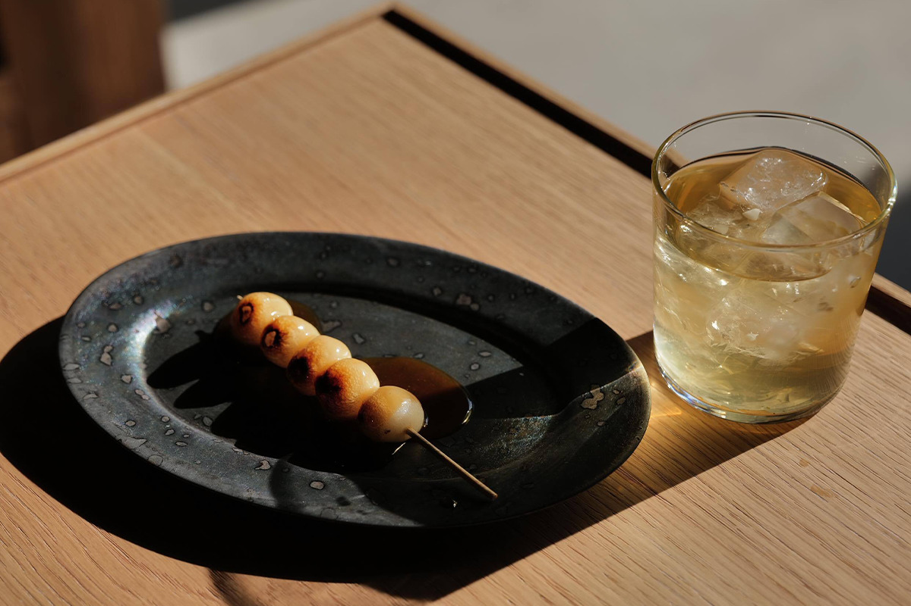
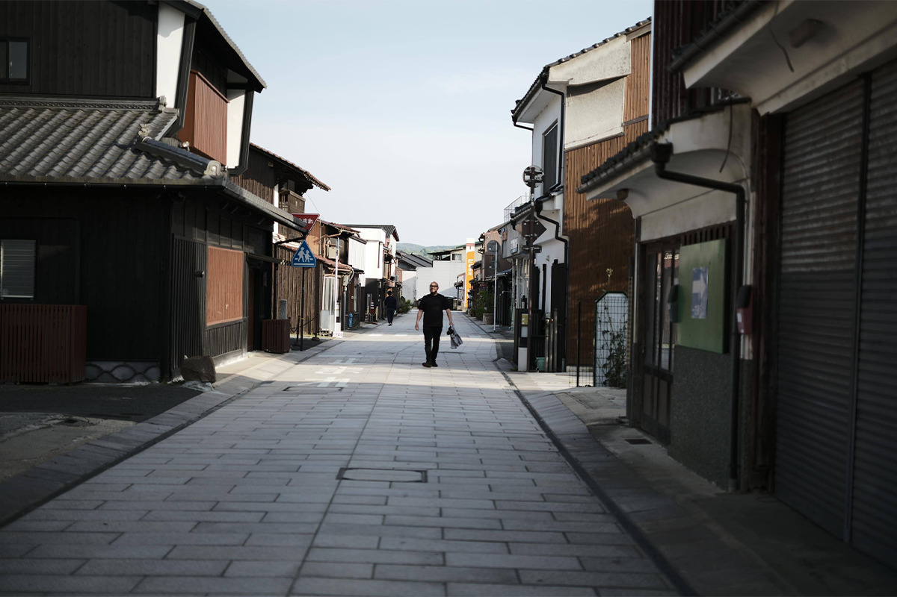
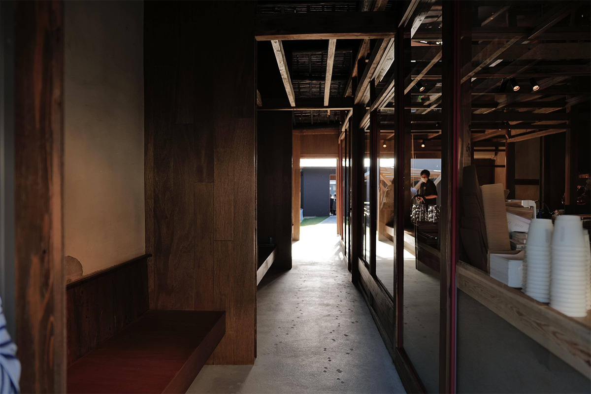
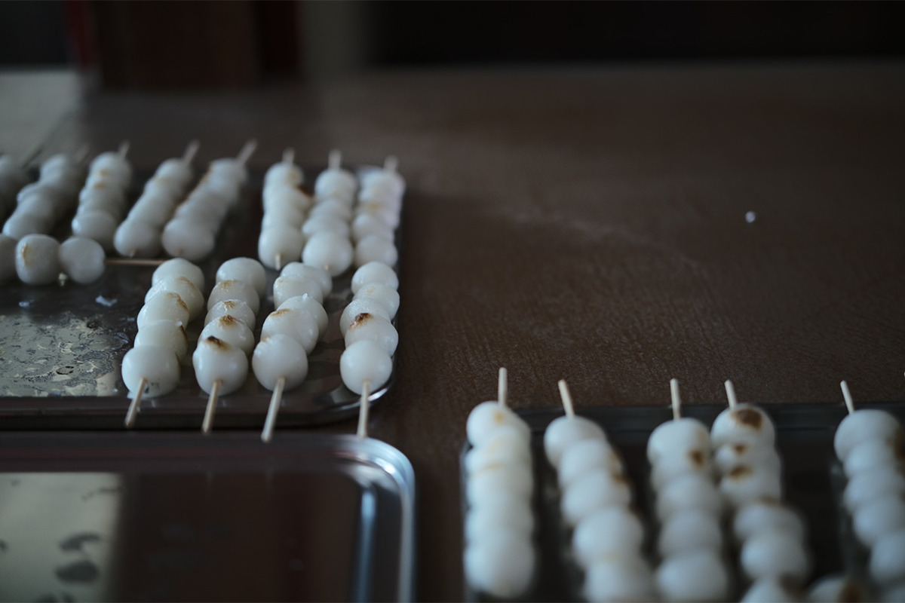
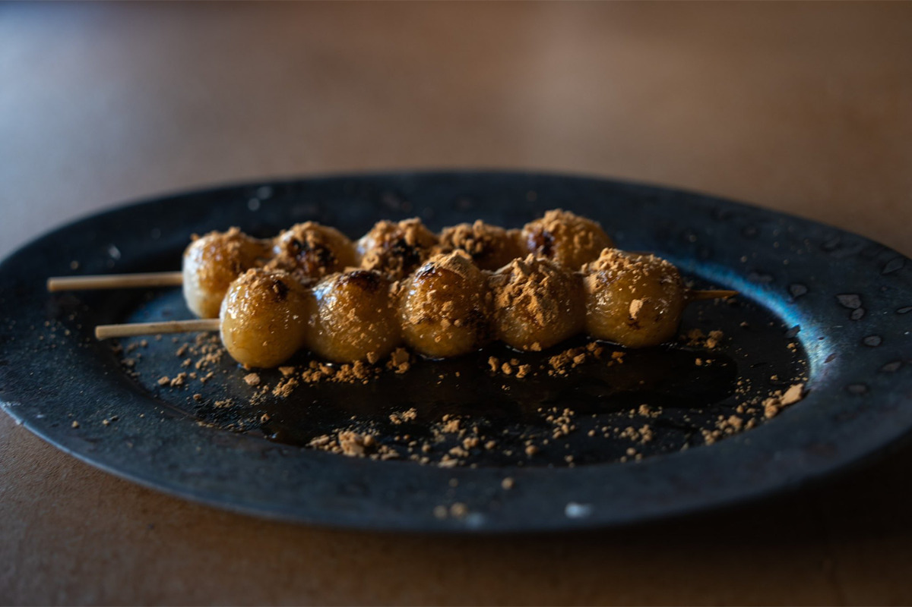
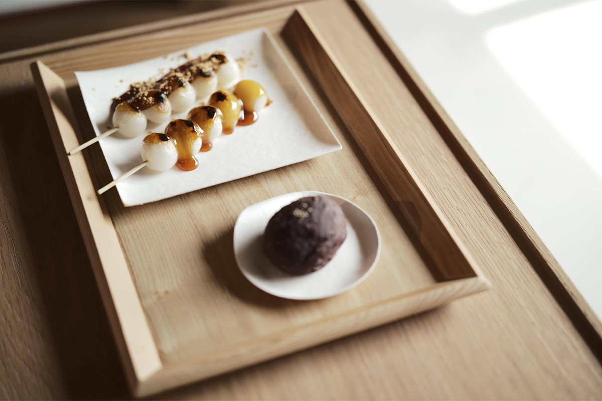
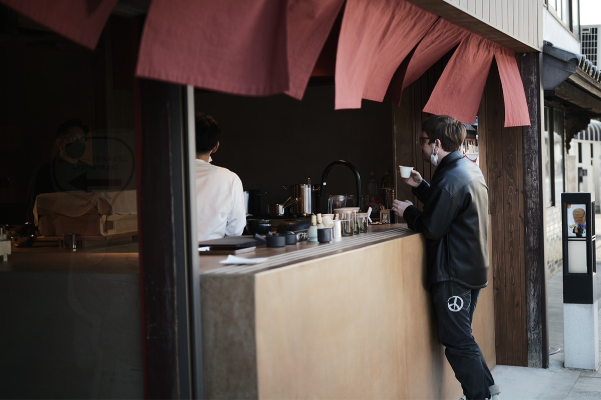

Префектура Хиросима · Миёси · сладости и город
Моти-но эки: лавка моти, которая соединила улицу и музей

В Миёси, в двух часах от Хиросимы, к музею мононокэ проложили новый переулок, а вдоль него открыли лавку моти. Здесь варят данго на местном соевом соусе, пьют травяной чай и проходят сквозь здание, как сквозь улочку.
Переулок
Город, где улицы ветвятся, как ветви
Миёси стоит в горной чаше на севере префектуры, в девяноста минутах от Хиросимы на машине или поезде. Природа щедра: город окружён горами, а равнинные земли кормят и рисоводов, и скотоводов. История тоже не подвела: со времён Эдо через town шли старинные тракты, связывавшие побережье Японского моря с Внутренним Японским морем. Вдоль дорог тянулись узкие проходы сёдзи, ответвления главной улицы, по которым люди ходили из дома в дом и которые не давали пожару перекинуться на соседний квартал.

Именно этот городской механизм и решили оживить. Старые тракты и ряды домов эпохи Асано стали основой проекта, при котором процветать должен весь посёлок, а не одна улица. К каменной улице «Рэки-мити» и музею мононокэ добавили новый проход «мононокэ-кодзи» длиной тридцать метров и шириной полтора.

Лавка
Моти, чай и дорога к музею

Лавка «Моти-но эки», что значит «моти-станция», открылась в старом доме, где когда-то торговали соевым соусом. Тему сохранили: фирменные митараси-данго готовят на соевом соусе из Миёси и жмыхе сакэ, остатках рисового пюре после отжима сакэ, которые дают печёную сладость и лёгкий хмельной аромат. Рецептуру выверяли вместе с кулинаром-поваром, а лепят шарики каждый день прямо при гостях: белые моти на бамбуковых шпажках проходят через решётку с соусом.

Из риса местных полей здесь готовят и моти, и о-хаги из нешлифованного риса с хиросимских полей и бобов адзуки с Хоккайдо, выращенных без химии. К сладостям подают травяной чай хабукуса из Миёси, местный сбор без удобрений и пестицидов: с моти он сходится идеально.

В зале продают и керамику, и книги о ремёслах: лавка и в самом деле похожа на маленький вокзал, с которого уезжаешь с покупками и новыми мыслями. Летом 2022 года здесь запустили интернет-магазин, он работает до сих пор.
Архитектор
Дом, где приятно застрять
Проект лавки и переулка сделал местный архитектор, глава проектного бюро с офисами в Хиросиме и Токио. «В нашем доме морозилка всегда была битком набита моти: бабушка лепила их каждый день, говорит он. «Я долго думал о месте, где люди будут собираться, вспоминать старое и мечтать о будущем, и пришёл к простой картинке: чай, моти и данго. Хочется, чтобы здесь крутились дети, как когда-то я у бакалейщика с карманом мелочи, чтобы старики встречались по утрам и чтобы сюда заглядывали за работой.»

Сегодня
Что изменилось к 2026 году
Весной 2026 года лавка на время закрылась, а 1 августа открылась снова: теперь это комплекс, где к моти добавился магазин одежды из вторых рук. График тоже обновился: четверг, пятница, суббота, воскресенье и праздники, с 11:00 до 18:00, сладости продают, пока не раскупят.
Лавка моти «Моти-но эки»
- Адрес
- префектура Хиросима, Миёси, Миёси-тё, 1582
- Телефон
- +81 80-7312-2504
- Часы работы
- 11:00–18:00
- Выходные
- понедельник, вторник, среда
- Сайт
- mochinoeki.com